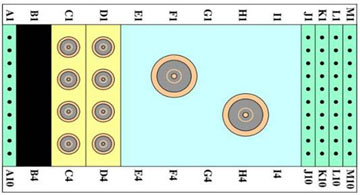

- 00000018WIA301FCE20GYZ
- id_131074632.0
- Feb 22, 2021 1:47:18 AM
3.0T 8-Channel Wrist Coil Troubleshooting
Personnel Requirements
| Required Persons | Procedure Timing |
| 1 | 60 minutes |
Procedure Overview
The following information can be used to troubleshoot common problems with the 3.0T 8-Channel Wrist Coil by Invivo, catalog M3340CA (for curved table) and catalog M7000GW (for flat table)
Tools and Test Equipment
Digital volt meter (DVM)
Procedure
Receiving No Signal
Problem: Unable to prescan, or scanning and receiving no signal.
Possible Solution:
-
Ensure the appropriate system coil was selected. Refer to the Operator's Manual, 5268024-4 (for curved table) or Invivo 4535-303-0503 (for flat table), for additional information.
-
Ensure the green light for port A is illuminated. This indicates the coil is properly plugged into the system.
-
Ensure the landmark is correct and the cradle did not unlatch.
-
Ensure the scan locations and any FOV offsets are correct.
-
Perform a cable continuity check on the external cable (see Cable Continuity Check). The continuity check must be performed by an authorized GE Service Engineer.
-
Ensure the coil is positioned with the cable exiting toward the bore.
If still unable to obtain a signal, try to scan (transmit and receive) with the body coil. For this test, be sure to remove the imaging coil from the magnet bore before scanning with the body coil. If still receiving no signal, there may be a problem with the MR system. If the scan completes successfully, there may be a problem with the Invivo coil. Contact GE for further assistance. If unable to scan with the substitute coil, there may be a system problem related to this particular coil type.
Image Quality
Problem: Image quality is not what is expected given the parameters selected.
Possible Solution:
-
Review the selected protocol. If performing the periodic quality assurance, be sure the protocol is identical to the protocol provided in the system recommended protocols. If performing diagnostic images, NEX or FOV may need to be increased.
-
Perform a cable continuity check on the external cable (see Cable Continuity Check). The continuity check must be performed by an authorized GE Service Engineer.
-
Ensure there are no loops in the cables.
-
Ensure there are no metal or ferromagnetic objects close to the coil, patient, or magnet (such as a safety pin or hair pin).
-
Ensure the coil is properly positioned.
-
Ensure the center frequency is within the frequency adjustment range for the system.
-
Ensure the R1, R2, and TG values from the prescan are within normally expected ranges.
Sometimes, cleaning the electrical contacts that connect the upper and lower halves with isopropyl alcohol and a cotton swab improves the coil's SNR. If not done already, perform Multi-Coil Quality Assurance. If the values obtained do not fall within normal operating parameters, investigate further by performing a phantom scan with the body coil. For this test, be sure to remove the imaging coil from the magnet bore before scanning with the body coil. If still having the same problems, it is probably an MR system issue. If the body coil scan is satisfactory, acquire a scan using another coil of the same type plugged into the same system port (port A). If the image quality is visibly improved, there may be a problem with the Invivo coil. Contact GE for further assistance. If the image quality still suffers, there may be a system problem related to imaging with this type of coil.
Artifacts
Problem: There is a black line or signal void on the image.
Possible Solution: Ensure there is no metal present in the area being scanned or on the patient.
Problem: Some or all of the images appear shaded or exhibit uneven signal or banding.
Possible Solution: Confirm that no metallic objects are located nearby or outside the FOV. This is especially important on images utilizing fat saturation.
If fat saturation is being used, ensure that the CFA fine adjustment is optimized.
External Cable Wear
Problem: The system does not recognize the coil or scan with the coil attached.
Possible Solution: Perform the cable continuity check below.
Cable Continuity Check
RF Signal Channels Check
| Notice | |
|---|---|
With the coil cable disconnected, use a multimeter to ensure an open circuit condition exists between the designated pin and ground (GND) for each signal channel.
| Signal Channel |
Coil Cable Connector
See Figure 1. |
System Connector
See Figure 2. |
| RF 1 | Pin 45 | C1 |
| RF 2 | Pin 1 | C2 |
| RF 3 | Pin 4 | C3 |
| RF 4 | Pin 8 | C4 |
| RF 5 | Pin 28 | D1 |
| RF 6 | Pin 44 | D2 |
| RF 7 | Pin 48 | D3 |
| RF 8 | Pin 49 | D4 |
| GND |
Note:
The following points are common to GND: Pins 2, 3, 5, 6, 9, 10, 11, 13, 17, 19, 21, 22, 23, 25, 26, 27, 29, 30, 33, 35, 36, 37, 38, 40, 41, 42, 43, 47, and 50. | |

If one or more of the readings indicates a short, replace the cable (see 3.0T HD 8-Channel Wrist Coil FRUs and Replacements). If all of the above readings indicate an open circuit condition, proceed to the PIN diode control channels check below.
PIN Diode Control Channels Check
With the coil cable disconnected, use a multimeter to determine continuity between the designated pins for each control channel below. Also, ensure the control pins are not shorted to GND.
| Control Channel |
Coil Cable Connector
See Figure 1. |
System Connector
See Figure 2. |
| MC Bias 1 | Pin 15 | J1 |
| MC Bias 2 | Pin 7 | J2 |
| MC Bias 3 | Pin 12 | J3 |
| MC Bias 4 | Pin 18 | J4 |
| MC Bias 5 | Pin 20 | J5 |
| MC Bias 6 | Pin 24 | J6 |
| MC Bias 7 | Pin 34 | J7 |
| MC Bias 8 | Pin 39 | J8 |
| GND |
Note:
The following points are common to GND: Pins 2, 3, 5, 6, 9, 10, 11, 13, 17, 19, 21, 22, 23, 25, 27, 29, 30, 33, 35, 36, 37, 38, 40, 41, 42, 43, 47, and 50. | K1-K8, M6, MC Shield |

If one or more of the reading are >3 ohms, replace the coil cable (see 3.0T HD 8-Channel Wrist Coil FRUs and Replacements). If all the readings are <3 ohms, proceed to the PIN diodes check below.
PIN Diodes Check
With the coil cable connected to the coil, use a multimeter to measure the diode drop across the coil connector pins as detailed below. See Figure 2 for pin identification while performing this procedure.
| System Connector | Reading | |||
| Positive Lead | Negative Lead | |||
| J1 | GND | [MC Shield] | 0.65 ±0.1 | |
| GND | [G1] | J1 | Open | |
| J2 | GND | [MC Shield] | 0.65 ±0.1 | |
| GND | [G2] | J2 | Open | |
| J3 | GND | [MC Shield] | 0.65 ±0.1 | |
| GND | [G3] | J3 | Open | |
| J4 | GND | [MC Shield] | 0.65 ±0.1 | |
| GND | [G4] | J4 | Open | |
| J5 | GND | [MC Shield] | 0.65 ±0.1 | |
| GND | [G5] | J5 | Open | |
| J6 | GND | [MC Shield] | 0.65 ±0.1 | |
| GND | [G6] | J6 | Open | |
| J7 | GND | [MC Shield] | 0.65 ±0.1 | |
| GND | [G7] | J7 | Open | |
| J8 | GND | [MC Shield] | 0.65 ±0.1 | |
| GND | [G8] | J8 | Open | |
-
If one or more of the readings indicates a short, replace the coil (see 3.0T HD 8-Channel Wrist Coil FRUs and Replacements).
-
If all of the above readings are correct, re-perform Coil Imaging Verification. If the problem still exists, replace the coil (see 3.0T HD 8-Channel Wrist Coil FRUs and Replacements).
Mechanical Parts Wear
Inspect the coil for visible signs of wear. If the coil housings do not seat with each other, or if the latch mechanism does not work properly, refer to the FRU list for replacements.